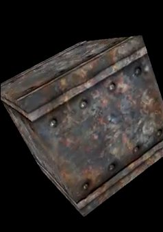

HelloOpenGLES is a well-commented example application for beginners. It demonstrates how to use OpenGL for Embedded Systems from your MoSync Application.
Note that this example application makes use of NativeUI and therefore only runs on iOS (iPhone) and Android devices. It will not run on MoRE, the MoSync Emulator.

This example is included in the MoSync SDK installation in the /examples folder. For information on importing the examples into your workspace, see Importing the Examples.
When the application runs, the screen displays a rotating, textured box.
Examine the source code of the application to learn how the program works. The extensive code comments highlight various aspects of working with OpenGL, including: